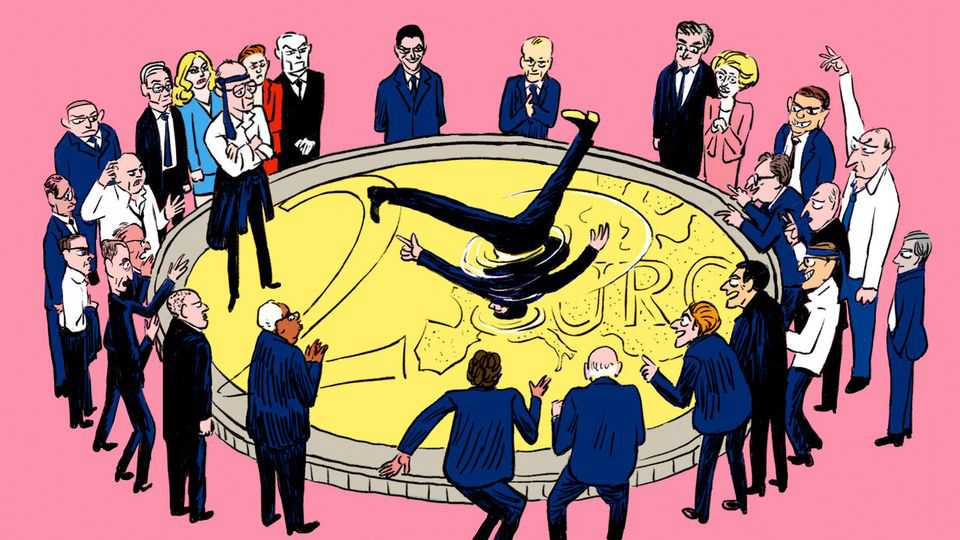

The EU budget is where grand strategy meets petty squabbling
And petty squabbling always wins

Oct 1st 2026
Nobody knows when it will happen exactly, yet everybody knows it will be ugly when it comes. At a European Union summit some time within the next 12 months, the bloc’s 27 national leaders will engage in the modern political equivalent of hand-to-hand combat: agreeing on the EU’s seven-year budget. Veterans of the ritual will arrive in Brussels with a half-dozen shirts at the ready, and whatever stimulants they need to get through it all. In 2013 the process was relatively painless, requiring just 26 hours to seal a deal. The most recent iteration still sends shivers down many a Eurocrat’s spine. At the height of the pandemic in the summer of 2020, presidents and prime ministers started talks at mid-morning on a Friday—and emerged from their windowless summit room at sunrise on Tuesday. The modern-day gladiators were so addled after four days and four nights of haggling that no one could tell who had won.
To say that this is madness is an insult to the clinically insane. Europeans have plenty of worthwhile disagreements over money; they happen in any polity. Yet their fiercest one concerns surprisingly little dosh. Public spending in EU countries typically runs to the equivalent of 50% of GDP. In contrast, the EU budget amounts to not much more than 1%. (A union that includes 450m people thus spends less than the government of Denmark, a country of just 6m.) Yet carving up this modest slice of outlays takes two years of behind-the-scenes preparations. During this time, nominal allies gel into rival factions tearing strips from each other. The “frugal” countries, led by Germany, are pitted against the supposedly spending-mad “friends of cohesion”, such as Italy and Spain. Outside football tournaments, Europe never looks more divided.
A budget that will run through to the mid-2030s should be a chance for the EU to look forward, to forge a common vision of how a group of middling powers might navigate a more dangerous world together. Instead it will be a festival of squabbling. Surely another way is possible. It is not just the hysteria of the negotiating process: the way the bloc gathers its funds, and the way it spends them, are both hopelessly out of date. What would a rational EU budget look like, without all the Sturm und Drang?
Start with where the money goes. In the current iteration around a third of the €1.2trn ($1.4trn) over seven years goes to agriculture. Another third will go to so-called cohesion funds, money aimed at bringing laggardly regions closer to the EU average. A budget reimagined from first principles would just about entirely forgo both. Farmers may be worthy of modest public support to keep the countryside pretty, or to ensure some level of food security, but this need not be done at the EU level. Worse, structural funds entail an application process so bureaucratic it is considered clunky even by Brussels’ paper-shuffling standards. The funds were devised in an era when poorer regions feared EU integration would lead to richer ones sucking up jobs. In fact, poor places like Bulgaria and Poland have benefited most, as the single market has led to convergence with western Europe.
“The EU budget should really be additional to what national governments can do on their own,” says Zsolt Darvas of Bruegel, a think-tank in Brussels. There are vast possibilities for how such money could be spent. Europe is being out-innovated by America and China; a smart EU budget could turbocharge productivity-enhancing research and innovation. The club’s countries need to spend countless billions on defence, some of which could usefully be done together (for example developing the next generation of drones to deter Russia). Pinch-points that make the European economy vulnerable, such as a lack of access to critical minerals or satellite-launching capabilities, are just the sort of thing that the EU budget should fund. Investment in cross-border grids would allow the continent to green itself and provide resilience in the face of energy shocks. Another worthwhile joint endeavour is funding Ukraine, which is best done at EU level: everyone in the club benefits from its resistance to Russia’s invasion.
How all this might be paid for might also usefully be rethought. Euro-federalists clamour for a bigger budget, funded by dedicated EU levies, for example by taxing pollution. In truth the budget would be big enough if spent properly, and the current contribution system, whereby national governments largely foot the bill, is broadly fine. But a sensible EU budget would be funded in part by jointly issued bonds, as it was in 2021 to pay for a one-off covid-recovery package. As things stand, the debt is to be paid down over time. Issuing more EU bonds instead, by making that borrowing permanent, would help deepen the continent’s capital markets, an enduringly weak spot in European integration.
What needs fixing most is the process. A shorter, more frequent budget might be less dramatic and more timely: the union is currently working off a plan first formulated in 2018. Sensible thinking on how to spend the money does exist. The first draft of the 2028-34 budget put forward by the European Commission in 2025 features good ideas (less cash for farmers). Yet already its worthy ambitions are being pared back. History suggests that by the time leaders meet to sign off, the research funding will have been slashed and the subsidies to farmers restored. Commission plans to throttle EU payments to governments that disregard democratic norms will also no doubt be softened.
The budget showdown is months away; elections in France next spring may delay it. On October 15th the EU’s leaders will convene simply to discuss how they will discuss it. Instead of haggling over every euro, they should find a process that lets them be bold. Europe has no shortage of fights worth having. How to perpetuate a budget designed for another era is not one. ■